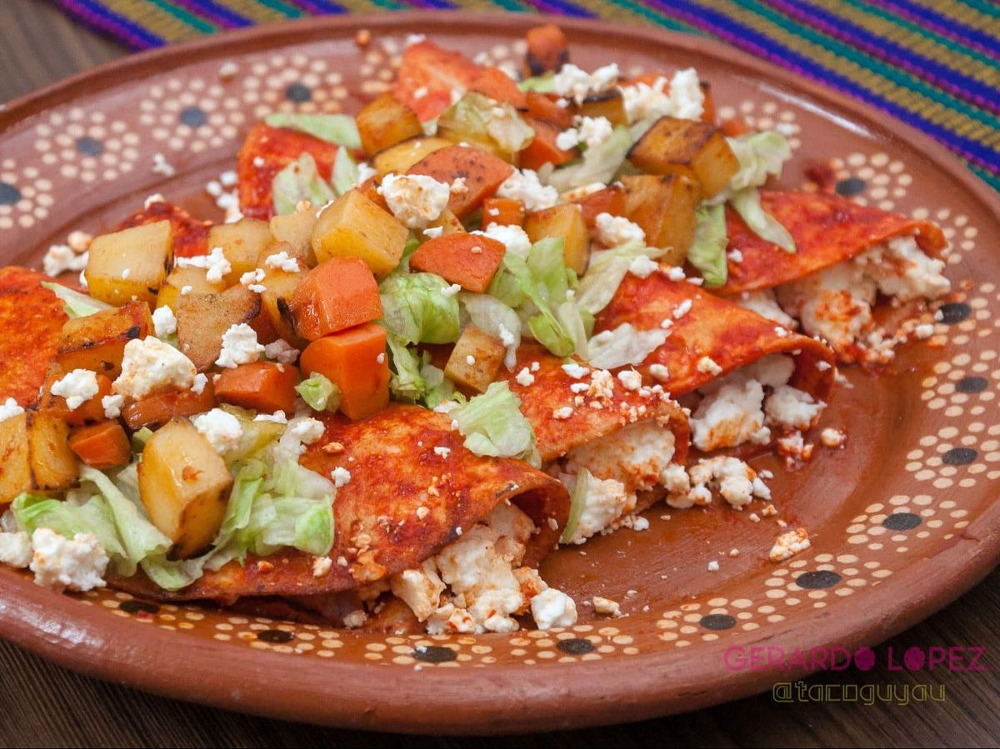
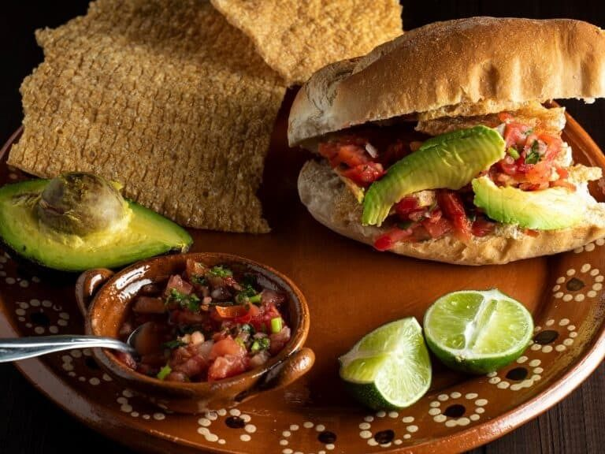
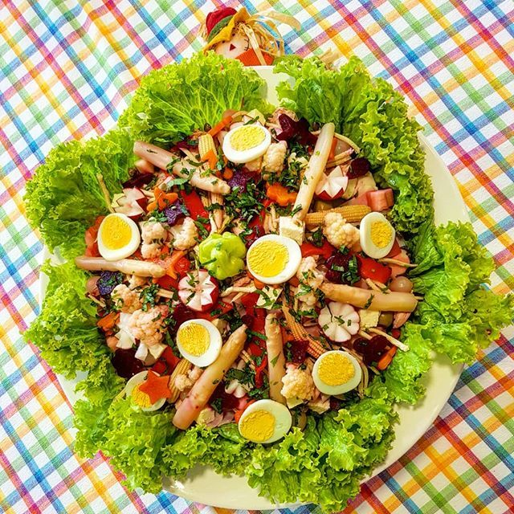
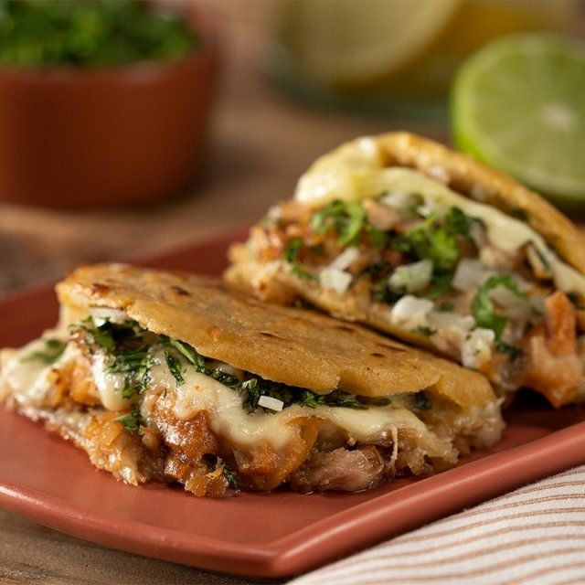
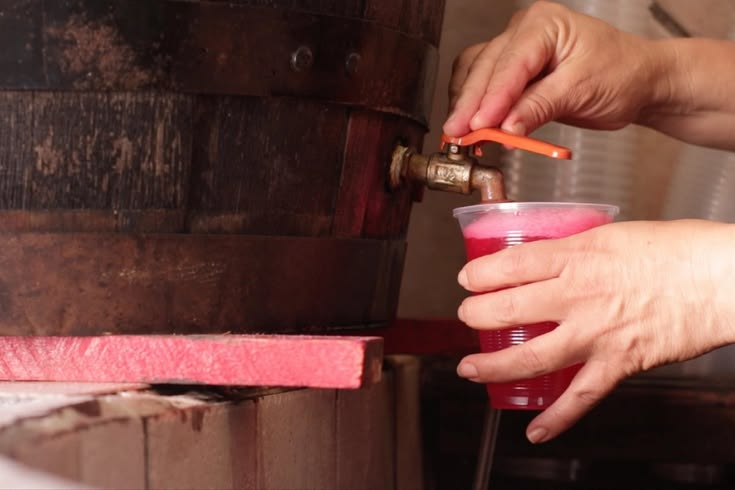
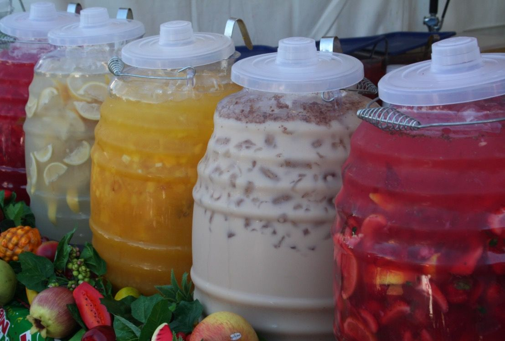
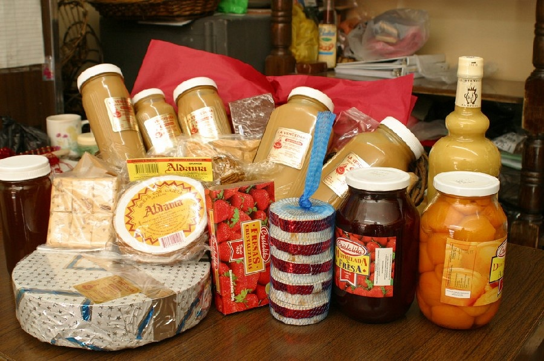
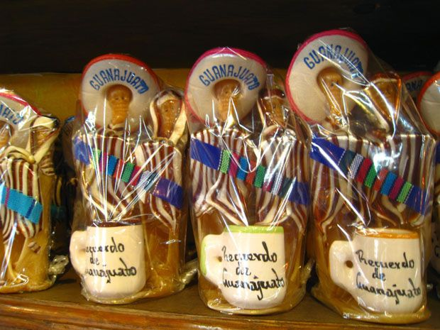
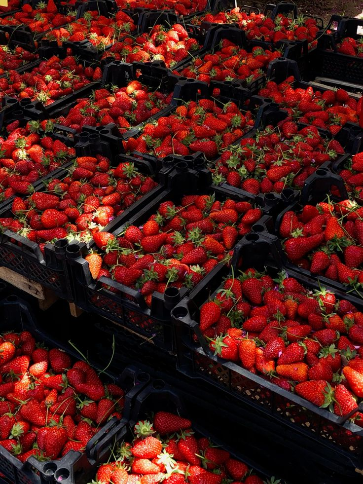

Sabores tradicionales

Tortillas fritas rellenas de queso o carne, bañadas en salsa de chile guajillo y acompañadas de papas y zanahorias fritas, originarias de la época colonial para los trabajadores de las minas. .

Bolillos rellenos de chicharrón, pico de gallo, aguacate y salsa picante, típicos de León..

Ensalada fría con pollo, lengua, patitas de cerdo, frutas y vinagreta, tradicional en celebraciones. .

Tortillas gruesas rellenas de carnitas de cerdo, típicas de Dolores Hidalgo..

Agua carbonatada con vinagre de piña, tamarindo o jamaica, digestiva y refrescante.

Elaboradas con frutas locales.

Dulce de leche de cabra caramelizada, usado en postres y obleas.

Figuras de caramelo típicas de la capital.

Fresas frescas o cristalizadas, reconocidas a nivel nacional.